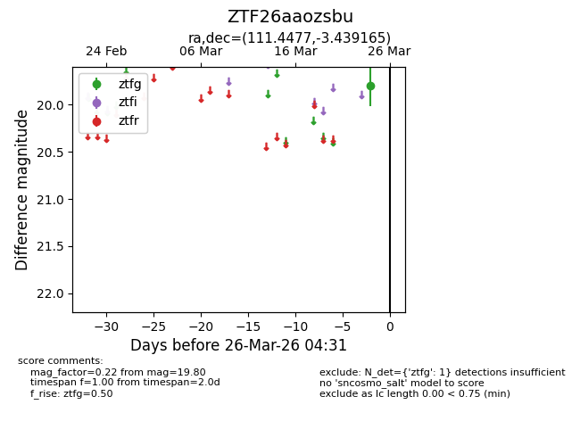
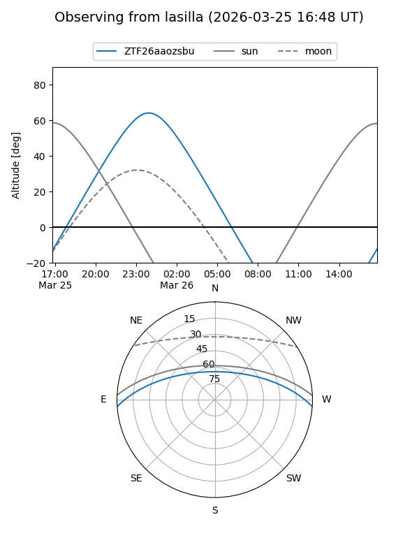
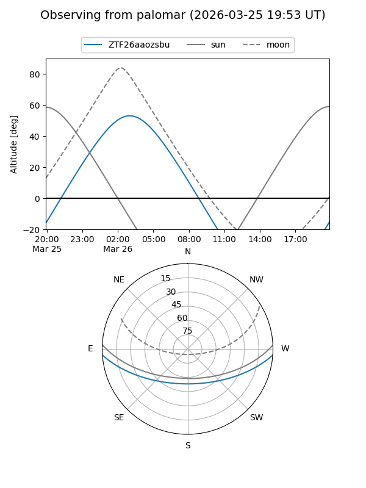

ZTF26aaozsbu
Target ZTF26aaozsbu at 2026-03-26 04:34
Aliases and brokers:
FINK: link
Lasair: link
ALeRCE: link
alt names
ZTF26aaozsbu (ztf,fink_ztf)
Coordinates:
equatorial (ra, dec) = 111.4477,-3.43916
equatorial (HMS+DMS) = 07:25:47.46,-03:26:20.99
galactic (l, b) = (219.9417,+6.04510)
Flags:
Photometry:
last ztfg=19.80
1 ztfg detections
Lightcurve

Visibility


Additional plots